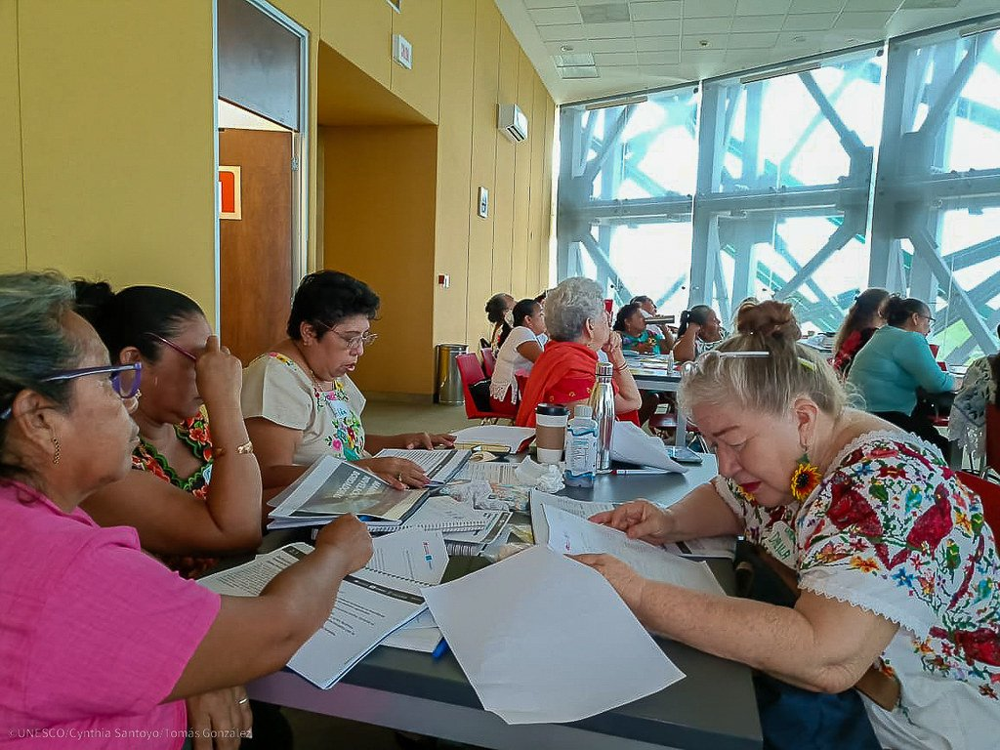

Quiénes somos
Una organización conformada por mujeres bordadoras de comunidades mayas, representantes de los municipios donde el bordado yucateco sigue vivo.
El Consejo
El Consejo Estatal de Bordadoras Mayas de Yucatán es una organización conformada por mujeres bordadoras de comunidades mayas, representantes de los municipios donde esta práctica sigue viva. Nos constituimos como espacio propio para cuidar, difundir y proyectar el bordado yucateco, reconociendo que detrás de cada puntada hay una historia, una comunidad y un saber que se hereda entre generaciones.
Nacimos durante el Encuentro Estatal de Bordadoras, como resultado del proceso participativo que dio origen al Plan Estatal de Salvaguardia del Bordado Maya Yucateco, un documento construido colectivamente con más de 350 bordadoras de 23 municipios. El Consejo fue creado por las propias bordadoras para dar seguimiento a ese Plan, impulsar su aplicación, y representar la voz de quienes sostienen esta práctica día a día.
Buscamos salvaguardar el bordado maya y yucateco, protegiendo, promoviendo, difundiendo y preservando las técnicas y diseños tradicionales de nuestra región.
Historia
Orígenes
El Consejo Estatal de Bordadoras de Yucatán se constituye en julio de 2024 como resultado de un proceso colectivo de salvaguardia del bordado maya yucateco, iniciado un año antes en el marco del proyecto Bordamos en Comunidad: el Arte Textil en Yucatán. Si bien su creación formal se enmarca en una fecha específica, su origen podría comprenderse con mayor profundidad a partir de la trayectoria previa de acompañamiento técnico e institucional, cuya articulación derivó en la necesidad, expresada por las propias bordadoras, de contar con un organismo representativo que diera continuidad a los acuerdos alcanzados durante el proceso.
El proyecto Bordamos en Comunidad, impulsado por el Gobierno del Estado de Yucatán con el acompañamiento técnico de la UNESCO y el financiamiento de la Fundación Banorte, se planteó desde sus inicios como un esfuerzo de fortalecimiento de las artesanas textiles y del bordado en el estado. Desde 2023, la UNESCO inició un proceso de acompañamiento dirigido a las bordadoras de doce municipios seleccionados por su representatividad en esta tradición: Abalá, Dzán, Hoctún, Izamal, Maní, Muna, Oxkutzcab, Tahdziú, Teabo, Tekax, Tekit y Valladolid. En este sentido, la conformación posterior del Consejo no debiera comprenderse como un acto aislado, sino como el punto de llegada de un proceso participativo que se extendió por más de un año y que involucró a más de 350 bordadoras en sus distintas fases.
Un proceso en tres fases
El camino que condujo a la conformación del Consejo se estructuró en tres fases sucesivas, cada una con objetivos específicos que, en conjunto, permitieron construir el Plan Estatal de Salvaguardia del Bordado Maya Yucateco, documento rector que el propio Consejo tendría posteriormente la misión de dar seguimiento e implementar.
La primera fase, correspondiente al diagnóstico participativo, se desarrolló a lo largo de 2023 en los doce municipios mencionados, a través de talleres organizados en torno a tres ejes temáticos: Patrimonio Cultural Inmaterial, Modelo de Negocios y Finanzas, y Masculinidades. En estos espacios, las bordadoras compartieron conocimientos sobre técnicas, productos, usos culturales, ciclos de vida y transmisión de saberes, al tiempo que realizaron un análisis de fortalezas, oportunidades, debilidades y amenazas sobre la práctica del bordado.
La segunda fase, dedicada a la identificación de acciones de salvaguardia, se desarrolló mediante talleres regionales celebrados en Maní, Oxkutzcab y Valladolid, en los cuales se sistematizaron más de 350 propuestas iniciales. Dichas propuestas se estructuraron en diez medidas generales que abarcan desde la documentación y la preservación hasta la inclusión y las políticas de género, pasando por la educación, la visibilización y la revitalización de la práctica. A partir de este proceso de sistematización, las propuestas fueron ordenadas en 168 acciones concretas que conformarían el catálogo del Plan, mismas que serían posteriormente revisadas y priorizadas por cada comunidad en función de sus intereses y necesidades particulares.
La tercera fase, correspondiente a la validación, culminó con la celebración del Primer Encuentro Estatal de Bordadoras, llevado a cabo entre el 10 y el 12 de julio de 2024 en el Museo del Mundo Maya de Mérida. Es en este espacio donde confluyeron los resultados del proceso completo, y es entonces que las bordadoras, al reconocer la necesidad de contar con una estructura organizativa propia que diera continuidad al Plan, resolvieron constituir el Consejo Estatal de Bordadoras.
La conformación del Consejo
Durante el Primer Encuentro Estatal, las bordadoras eligieron a dos representantes por municipio para integrar el organismo, constituyéndose con 24 integrantes procedentes de los doce municipios más representativos del Arte Textil en Yucatán. La composición inicial refleja una diversidad significativa en términos de experiencia y especialización: la edad promedio de las integrantes se sitúa en 45 años, con un rango que se extiende desde los 24 hasta los 73, lo que permite una representación intergeneracional del oficio. Así mismo, entre sus miembros se encuentran artesanas con más de cinco décadas de práctica, bordadoras que combinan su trabajo con actividades docentes, y representantes de distintas técnicas que abarcan desde el bordado a mano hasta el uso de máquinas artesanales de pedal.

Lo que nos define
Patrimonio vivo
El bordado no es solo una técnica artesanal: es Patrimonio Cultural Inmaterial que sigue vigente y evoluciona con nuestras comunidades. Cada puntada nos conecta con nuestra historia y nos proyecta hacia el futuro.
Comunidad
La fuerza de nuestro trabajo está en la unión y en la transmisión de saberes. Somos maestras y aprendices al mismo tiempo, y ese diálogo entre generaciones es lo que mantiene viva la tradición.
Dignidad del oficio
Defendemos el reconocimiento justo del trabajo de las bordadoras: su autoría, su tiempo, su conocimiento. Promovemos relaciones equitativas y éticas que aseguren una compensación digna por el uso de nuestros diseños y obras.
Raíces y proyección
Trabajamos desde nuestras comunidades y con ellas, pero entendemos que el bordado tradicional maya dialoga con el mundo. Por eso buscamos llevarlo a espacios culturales regionales, nacionales e internacionales sin perder su esencia.
De dónde venimos
El bordado es una práctica ancestral viva en Yucatán, presente en prácticamente todos los municipios del estado. Yucatán cuenta con la mayor diversidad técnica del país: se han contabilizado 34 puntadas distintas, lo que representa alrededor del 10% de las casi 300 registradas en el mundo. Entre ellas, una es única y endémica de esta tierra: el Xmanikté, la flor siempre viva, cuyo nombre y forma se relacionan directamente con la cosmovisión maya.
Aunque lo practicamos principalmente mujeres, también hay hombres bordadores, y es un símbolo de identidad de toda la población yucateca. El bordado está ligado a la vida cotidiana y a la vida ceremonial, a lo que se usa, se regala, se hereda.
Hacia dónde vamos
El Consejo se encuentra en un momento de consolidación. En los próximos años trabajaremos para ampliar la representación de bordadoras en todos los municipios del estado, formalizarnos como Asociación Civil, fortalecer la comercialización justa de nuestras piezas, y posicionar al Consejo como referente en la preservación del patrimonio textil, primero en Yucatán, luego en México, y más adelante en el mundo.
Sobre nuestro logotipo
Nuestro logotipo resalta el punto de cruz, la puntada más distintiva de Yucatán, tanto en la flor que se dibuja como en el borde donde aparece el nombre del Consejo. Los pistilos de la flor son agujas: un recordatorio de que somos mujeres que trabajamos con nuestras manos, y que hemos prometido defender y preservar el bordado artesanal hecho a mano.